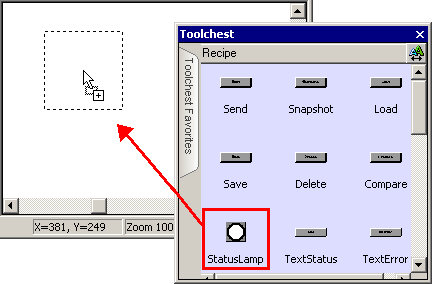
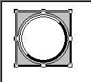
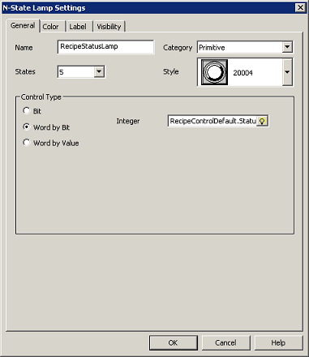

|
|
|
|
|
|
|
|
To display the recipe's current status, you can use Recipe Toolchest Status Lamp part or the Text Status part. A Status display uses the bit values in the Control Group's Status variable to show the current status, which displays one of five states: Idle, Error, Busy, Compare Match, or Compare Mismatch. The following example uses the Status Lamp part. For details about setting up Recipe Control Variables, see Section 17.3.5.1, Recipe Control and Parison Control Variables.
Click the Toolchest icon  in the menu bar to open the Toolchest window.
in the menu bar to open the Toolchest window.
Select the Recipe folder.
Move the Recipe part onto a panel using the drag and drop operation.

The part is displayed on the panel.

Double-click the part to open the N-State Lamp Settings dialog box. Note the selection in the Control Type property and the specified integer variable.

If necessary, customize the look, shape, and label for your lamp. For more information, see Section 10.2, Lamp Settings.
Click OK. A lamp to display operation status is created.